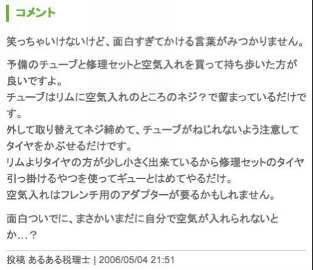
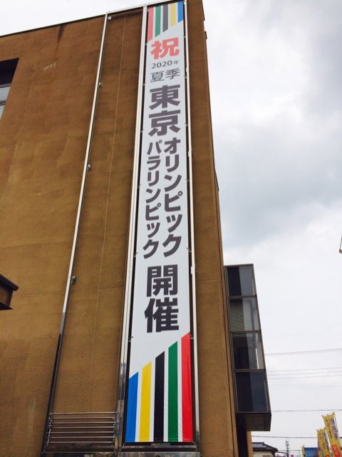
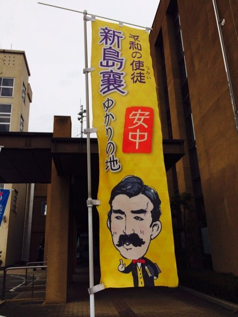
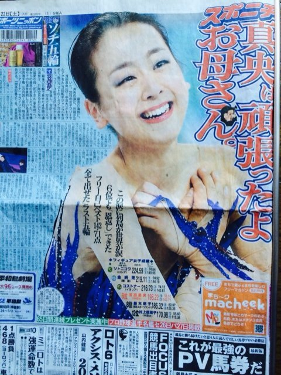
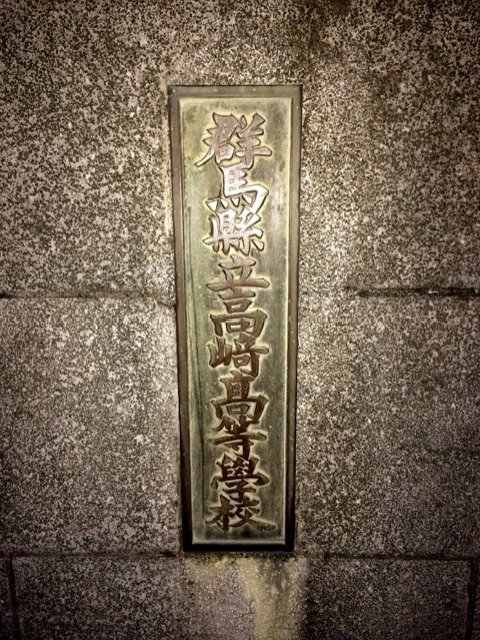
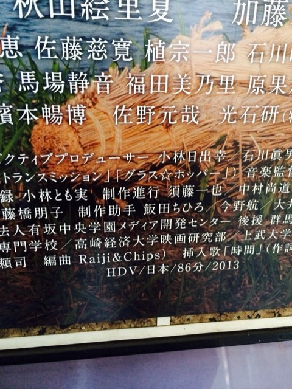
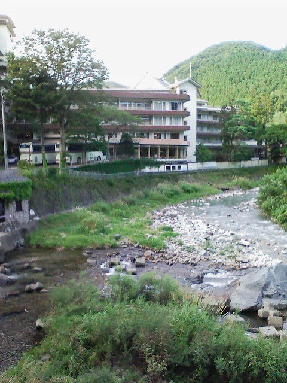
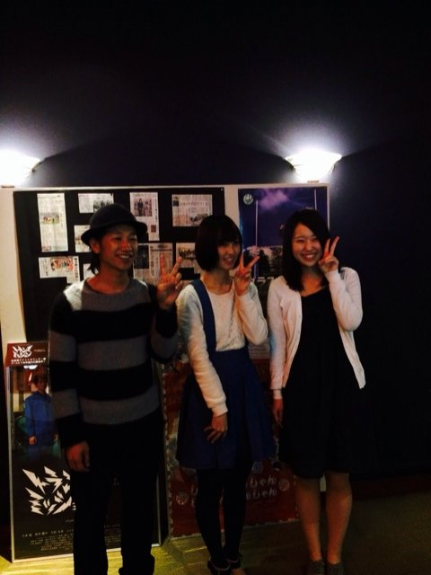
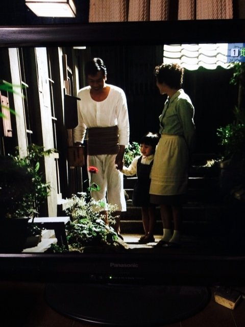

| あの月が満ちるとき君はやってくる | |
| 小林 秀一 | |
| YUMEJITUGENDAIGAKUSYUPPAN (2015) | |
目次
いつもこの時期、自転車でやれ琵琶湖一周だとか九十九里浜だとか言ってましたが、いつも計画倒れになっていて、オオカミ少年と言われかねない状況にありました。
今回は、犬吠埼の灯台から太平洋を望む利根川下りコースです。
準備ができ次第...といっても特にない...今夜出発です。９割近くは利根川サイクリングロードを走りますので危険性はそれほどありません。いちおう３泊程度を予定しています。あとはいつもの出たとこ勝負。途中経過は逐次報告します。
愛は地球を救う、なうまんバージョン。
君は海を見たか？自転車で往復４００キロに挑戦。
目指すは太平洋。いまスタートしました。
現在地は伊勢崎市坂東大橋たもとのファミリーマート
水とアミノ酸を調達。ＮＨＫの英会話を聞きながらゆっくりとしたペースで走ってます。
今日は気温が高いようで半袖にしました、というかシャツ一枚になっただけか。
一応、はらづもりで今日の目的地はきめてありますが、いけるかどうか。
さいわい風が凪いでいるので楽です。
現在地は刀水橋
太田と熊谷を結ぶ４０７号線がはしっている橋です。
風が凪いでいるなんて書きましたがとんでもない。
風速５ｍクラスの向かい風です。
いきなりの試練でやる気を試されているみたいです。
自転車で最初に来るのが尻の痛みですが、さすがにそのあたりはクリアーしています。
尻より手です。ハンドルから来る振動で手がいたくなるのです。
西の空にはうっすらと三日月が‥
遠くからのご声援ありがとうございます。
現在地は武蔵大橋から昭和橋にいく途中の山崎デイリーショップ。
トマトジュースとパンで補給。
寒くないのが救いかな。
疲れはさほどありませんがやはり暗い夜道は心細いですね。
羽生から加須を抜けて栗橋に向かっています。
おおよその位置はつかんでいますが、いまここが地図でどこなのか不明。
加須未来館の表示があります。
目標地点までおよそ１５ｋｍくらいかな。
かえるがげこげこ鳴いて水田に水が入ってます。
こちらのほうが田植えの時期が、はやいのかな。
電波がわるく送信できず。
現在地は大利根町。
もうすぐ栗橋。
ちょいと道に迷って５ｋｍくらい余分に走りました。
写真は茨城県総和町（合併により古河市）の健康ランド『ファミリー』。
いま道向かいのラーメン屋『壱番亭』でビールで乾杯。
ふー、ってところ。でも意外と足が強くなってることに気がついた。
けっこうスピード出せたし風にも負けなかった。
筋肉質になってるのかな。
そんなこんなで本日はこれにて閉幕です。おやすみ。
といってもロックじゃあない（笑い）。
自転車につきものの空気のぬけるやつ。
快調に小雨の中を合羽を着て進行中、なにやら後輪の感触がぐにゃぐにゃ。
空気圧が足りないかなと思っているうちにすっかり抜けてしまった。
利根川の自転車道。まだ境大橋まではそうとうの距離がある。
雨脚も激しくなってきた。
自転車をもちあげて転がす。
泣き面をしてると蜂がとんでくる。なにやら便意が‥。
おいそれとコンビニもないし困った。しばらくすると
境の渡し（なぜか高瀬舟と書いてある）に現場事務所発見。
簡易トイレ付き。紙完全装備。ばっちしだ。
紙は我を見捨てず‥などと遊んではいられない。
自転車道を降りて自転車屋を探すがあいにくと２軒ともお休み。
ＧＷだもんなあ。親切な人がホームセンターなら修理してくれるかもと教えてくれる。 境道の駅むかいのショッピングモールの一角にあるホームセンター。
群馬でいうところのカインズだ。
いま修理を依頼してきたところ。担当が１２時にならないとこないとのこと。
受付の女性ができるだけ急がせます、ということで１時まで時間が空いてしまった。
まあ、トラブルもまたよし。いろいろあるからね。
人生はライブだ。
パンクなおりました。再出発です。どこまでいけるかな
あるある君にパンク修理法を教えてもらおう。
芽吹大橋を過ぎて淡々と走ってます。野田市の北です。
まだまだありますね。
我孫子あたりまでは行きたいものです。
日差しに揺れている名もない小さな花さえも
そんなに弱くない しぶとさを教えてくれているよ
鼻歌を歌っていたら、どうしても思い出せなかった『虹を追いかけて』の歌詞を思い出しました。
現在地は千葉県我孫子市
大利根橋を過ぎたあたりから自転車道が砂利道になり走れません。
しばらく転がして進みましたがらちがあかず、
一般道を走って我孫子市内『夢庵』我孫子北店に入りました。
雨脚も強くなり本日はここまでモードです。
昨日８０Ｋ。今日６０Ｋくらい。
ゆっくり休んで態勢を整えます。明日は天気がよさそうだし。
たまたま千葉に来ていた友人の小林浩一から夕飯のお誘い。
元気をつけようということで焼き肉屋に。
その後、となりの白金の湯で一風呂浴びてさっぱり。
昨日は茨城県古河市の健康ランド２３００円でしたが、今日は奢って千葉県柏市のビジネスホテル大吉６３００円にお泊まり。
自転車も１階の使ってない部屋に格納してくれてとても親切。
明日は天気もよさそうだし一気に海まで行きます。
あとのこり８０ｋｍくらいかな。本日はこれにて終了。
おやすみなさい。
予報通り、ぴーかん五月晴れ。
たっぷり寝て起きて気分爽快。
デニーズで朝定食をとってから出発です。
利根川から、だいぶ、離れてしまったのでどう合流するか地図を見て検討中。
手賀沼の南をはしる２８２号線を東に進むと栄橋の下流あたりに出る。
ＪＲ成田線の'きおろし'駅で自転車道の様子を見たい。
整備されているかどうか。
まあ、そんなことを考えながらいきます。
発作がおきたわけではありません。
思わず写真を撮ってしまいました。
利根川まで３ｋｍくらいかな。
天気もよく、汗ばむ陽気のなか快調に進行中。
《注》印西（インザイ）市、ってなにかな、って思ったら印旛沼の西にあるからなんですね。
ふと空をみると飛行機が‥もう成田も近いのです。
鉄塔の右に巨大な人像
写ってないかもしれないけど肉眼でははっきり見えます。
牛久の大仏です。異様な大きさですね。
海まであと７０ｋｍと表示。
５０ｋｍを切ったところくらいで昼飯にしたいかな。
長豊橋を渡って左岸にいく予定が橋が細くて交通量が多く危険なため１本ずらしました。もう主だった橋は神崎、水郷、利根川、小見川、かもめくらい。
水郷大橋でまた右岸にもどります。
あと５４ｋｍ。
橋のたもとの㈲江口百貨店という駄菓子屋でパンを買って食べました。
これが昼食です。ゆっくりペースであと３時間。
太平洋の写真をおとどけできると思います。
写真では見えにくいのですが、かなたに見える橋が利根川最後の橋
利根かもめ大橋
《注》と、書きましたが、このあとにもう一本、銚子大橋があります。
ところがここにきてサイクリングロードが終わってしまいました。
地図を見て道を考えます。
でも犬吠崎までは１０ｋｍ。
日没後になりますね。海までは。
寒くなってきたので着替えをして走ります。
銚子港のシンボル「銚子ポートタワー」です。
ここまで２４５ｋｍ走りました。
あと３ｋｍくらいで犬吠崎なので灯台の近くまで行ってみます。
銚子漁港の海岸通りにいかにも美味しそうな店が軒をならべていました。
まあこんな時期に予約もしないででかける方が悪いといわれれば、ごもっとも、おっしゃる通り、といわざるをえない。
銚子駅前の食事処'膳'で夕食をとった。
私は混んでる店が嫌いなので人がいないのを確認して期待もせずに入った。
ところがどっこい味はよいし、親切。
事情を話したところ電話かけまくり。
３０以上市内のホテルや民宿に電話してくれた。ところがどこも満杯。
なんと、市役所の守衛にかけて空いている部屋を使わせてくれ、だとか、
近くの交番は新しくしたばかりだからきれいで部屋があるはず、だ
とか群馬県人では考えつかないアイデアが飛び交う。
ちなみに夫婦ふたりでやっている店。
旦那さんは銚子商業で中日に入った土屋と同級生だとか。
江川の話しも出た。そんな話をしながらも奥さんは電話帳とにらめっこ。
市の観光協会にかけてもだめ。
だめだね、ということであきらめて、お礼をいって店を出た。
本当にありがとうございました。今度は予約してゆっくり来ます。
まずは風呂だ、と近くのサウナに。
ところが背中に絵が描かれて人がたくさんいて、ぷちっとヤバそー。
早めに退去しようと思いきや、格闘技をテレビでやっていて山本ｋｉｄがやるところ。 相手はシドニーのオリンピック選手。面白そう。
ついついこれを見て‥といっても４秒で決着。
いずれにしろのんびりもしてられないので汗を流して駅に向かう。
電車があれば自転車を置いて都内まで‥なんてことを考えたが既に最終電車はでたあと。
自販機でたばこを買おうとしたら人相のよくない２人組がベンチからじろり‥。
ここもプチヤバ。
殺気を振り払うように自転車をこぎだす。
さっきの親切な夫婦が鹿島ならなにかありそう、といっていたことを思い出す。
銚子大橋(かもめ大橋と混同してました)を超えて茨城県に。
鹿島を目指す。３８ｋｍとの表示。
けっこうあるなあ、ふー。
しばらくすると激安カラオケのネオンが点滅中。
まてよ、と近づくと朝５時までとある。
５時なら明るい。十分だ。
ということでいまそのカラオケボックスからこれを書きました。
ソファーを２つあわせればベッドになります。
そんなこんなでおやすみなさい。
写真はさきほどかもめ大橋からとったもの。
すでに帰路にはいっており、のこり１８５ｋｍ地点。
５時にカラオケ店を出て途中２４時間営業のすき家で朝食。
体力をつけて走り出しています。
身体もとくに痛いとか悪いところはなく体重がどうなってるかが楽しみ。
今日は暑くなりそうなので水分補給に注意して走ります。
2006/05/04 またまたパンク

実は昨日から後輪の空気圧が減ってるので気になってました。
どこかで自転車屋をさがさなくっちゃと思っていた矢先。
好事魔多し。
走り出して３ｋ位、
小見川大橋まで５ｋあたりで空気が抜ける。
転がしで１時間。
カインズ小見川店は１０時開店。
時間つぶしにジョイフルに。すこし居眠り。
自転車を転がしながら色々なことを考えた。
伊集院静という作家がいる。夏目雅子の旦那だった人。
彼はなかなかのギャンブラーで特に競輪はうるさい。
別府だったか小倉だったか場所は忘れたが、外しに外して帰りの電車賃があるかないかのオケラ状態。ポケットの小銭をじゃらじゃらさせながら歩いているそのときに彼はひらめいた。
'それがどうした'
この魔法の呪文、覚えておいて損はない。
彼氏と別れた。あんなに愛していたのに‥。
そんなあなた。言ってみよう。
'それがどうした'
息子が浪人。学費もかかり生活が大変。
そんなあなたも、言ってみよう。
'それがどうした'
消去法ではなく、いまあるものを探せば、なんとなく心が晴れ晴れとしてきませんか？
あなたが無為に過ごした今日は
昨日死んでいった者が
どうしても生きたかった明日
まいったな、って思ったとき言ってみよう。
'それがどうした'
そんなこんなでパンク修理中。
カインズで簡単に直ると思ったがチューブが対応していなくて別の自転車屋さんに転送。
矢口自転車本店。
ところがロード用の細いチューブがここにもなく、他の店からの取り寄せ。
いま店の人が他店に現物をとりにいってるところ。
まだしばらくかかりそう。
眠くなってきた。
どうなるかと心配しましたが、チューブ到着５分で修理完了。
チューブを携帯すべきですね。
ロードレーサーの場合細いタイヤなのでホームセンターなどでは置いてないことがあるのです。 都市部を走っている分にはなんとかなりますが、サイクリングロードは街中とは限りませんから。
教訓その１です。
さいわい追い風です。いまココスでスパゲティの昼飯。
歩き疲れているので、のんびり帰ります。
ダイエット的にはかなり効果出てるはず。あれだけ歩きましたから。
一気にと思いましたが無理は禁物。
明日までに帰ればよいのでまた柏のビジネスホテル大吉に泊ることにした。
途中、アミノ酸不足から苦しい戦いを強いられたがなんとかここまで戻れた。
というか途中はホテルのありそうな大きな町がない。
小見川を出たときは追い風で、こりゃ一気に進め、と騒いでましたが水郷大橋あたりから風向きがかわり悲惨。
風は海からときいていたが話が違う。
行きも帰りも逆風‥。
でも良いこともある。
いま白金の湯にいる。
05/02 05/04
High 164 153
Low 85 76
Beat 94 76
たった２日で数値が好転している
これから体重をはかる
まだです。夢の７０台。
でも、ほっといても、じきにいけますね。
体重が減ると人相が変わります。
シャープになって鋭い感じに、っていわれます。
腹がへこむのは良いこと。
鏡に写った自分の姿なんて見たくない醜態ですからね。
少なくとも腹が引っ込むことで自信を取り戻すかも。
まあ、それもそうですが、自転車で減量できて健康を維持、というか回復できればこんなに素晴らしいことはないです。 趣味でやってることが役にたつとなれば、もっと頑張れるね。
今日は私にとって今年一番運気が強い日。
お世話になっている例の牛（‥じゃなくて霊能師）の力石さんのご神託です。
そんなレアな一日を自転車に乗ってすごすのもいかがなものかとも思いますが、乗っているうちに良いことが起きるかも。
少なくとも三度目のパンクはありえませんね。
天気も良い。血圧も下がり、体重ももしかしたら７０台？と自転車効果は抜群。
もうここまでくれば道はわかっているし余裕をもって今日のうちに家に戻れると思います。
高名の木登りの故事《注1》もあります。
最後まで油断しないで走らないと、ですね。
《注1》
徒然草 吉田兼好
第109段
高名の木登りといひしをのこ
その名が轟くほどの木登りの名人といわれた男が、ある人を指導して、とても高い木に登らせて、その木の梢を切らせた。
ずいぶんと危なっかしいように見えたときには、名人はなにも言わなかったのだが、やがて切り終わり、軒くらいの高さにまで降りたところになって、「怪我をしないように、用心しながら降りてください」と、声をかけた。
「おや？ このくらいの高さならば、飛び降りたっていいくらいではないですか。なぜ今更そのようなことをおっしゃるのですか？」と応えたので、木登りの名人はいった。
「まさにそのことなのです。目が眩むほどの高さで、枝などが折れてしまいそうなところでは、自ら用心するので、なにもいうことはありません。
怪我というものは、もう安心だなどと思うあたりでするのが常なのです」
身分もない男の言葉であったが、聖人の教えに合致していることである。
蹴鞠（けまり）でも、難しい局面を、うまく蹴って、もう平気だなどと思ったとたんに、落ちてしまうのが常だ。
柏を出て７号をまっすぐ。野田のゴルフ場を通って自転車道に。
もうずっとサイクリングロードで家まで戻れます。
最初のパンクをなおしたホーマックがあるショッピングモールきんか堂で、人なつっこいおじさんとお友達になりました。
名前は早田さんだそうです。
私の自転車に興味があるようでほしいようなこといってました。
早田さんも早くマウンテン買ってサイクリングしましょう。
2006/05/05 加須名物のうどん
加須といえばうどん。与市というなんとなく期待できそうな、うどん屋で昼飯。
もうここまで来れば安心。
残り６０ｋｍくらいか。
風呂に入って、昼寝しました。やはり疲れもでます。
これから再出発。残り６０ｋｍくらいか。
残り２５ｋｍ地点まで戻りました。
ここで一服するのがお約束。
出発のときは三日月でしたが半月くらいに満ちてきました。
さて上着を着て走ることにしましょう。
無事帰宅しました。
体重は期待したほどでもありませんが体が締まったような気がします。
無駄はするけど無理しないという考えで自転車に乗ってます。
また機会があれば長距離走行に挑戦してみたいです。
走行距離は５日間で４７９ｋｍでした。
深夜早朝のメール着信でご迷惑をおかけしました。
これに懲りずに今後ともよろしくおつきあいください。
今日は日曜日ですが、一足先に連休が終わりこれから仕事。
連休の６日間で６００キロ。
平均１００キロ走りました。
体重の減少はさほどではありませんが、血圧が下がりました。
高血圧には自転車が効果的。一日１００キロ走ると確実に下がる。
となるとこれは発見です。一時的なものかもしれないので、今日、もう一度計測してみます。そろそろ時間です。
DATE: 05/08/2014 01:29:00 AM
CATEGORY : 長い人生、時にはそんなこともある


安中市役所に法人市民税を納付に来ました。
去年も、こんな時期に来てます。
去年は、八重の桜でしたが、今年はなぜ か ^_^
新島襄は、健在ですね。
とまあ、これだけでは、だからなんだ、と言われそうなので、近況を少し。
久しぶりに資金繰りレスキュー隊案件が来ました。
昨日、大宮まで行って来ました。
仕事になりそうです。
それから 、4月 1 0 日に恒例の伊勢崎税理士会のご苦労さん会が、伊香保温泉でありました。伊香保カントリーで、行なわれたゴルフで、なぜか 、 9 9 で準優勝してしまいまし た ^_^
いま、考えていることは、資金繰りレスキュー隊 の NP O 法人化です。
いままで、個人でやって来ましたが、ここは、ひとつ、玉村町の活性化対策として、町と連携して、町おこしに一役買いたいと考えています。
《注》今は、税理士、公認会計士、金融機関などが、認定支援機関として、国からお墨付きをもらい、国からの補助金の対象となっています。資金繰りレスキュー隊は、ビジネスモデルとして成り立たないと言われてきましたが、やっと、陽の目を見ることができるようになりました。
CATEGORY : 長い人生、時にはそんなこともある
DATE: 01/02/2014 04:45:00 PM
やや、風は、あるものの...というか、群馬の風は、とても、こんなものではないという意味で...穏やかな正月です。
朝 NH K で、桂三枝の両親を取り上げた番組をやってました。
お母さんが、女手一つで、苦労に苦労を重ねて、桂三枝を育て上げる話でした。
お母さんが、ある時こんな事を言ったそうです。
「いつか天皇陛下にお会いしたときに、恥ずかしくないような子に育てる。」
後に、桂三枝は、園遊会に招かれて、天皇陛下と対面する機会を得ます。
なんだか、凄いですね。感動しました。
CATEGORY : 長い人生、時にはそんなこともある
DATE: 01/11/2014 11:58:00 AM
駅前がすっかり様変わりしてます。
本庄早稲田を利用して、よく小倉に行きました。
飛行機があまり好きでないので、新幹線を乗り継いで行ったものです。
ブログにも書いてあると思います。
懐かしいな。
今は昔。今昔物語となってしまいました。
CATEGORY : 長い人生、時にはそんなこともある
DATE: 02/22/2014 02:43:00 PM
金メダルは、とって欲しいけど、それよりも、みんなに愛されるスケーターになって欲しいのよ。母はそう、ねがっていた。目指した金メダルにも表彰台にも届かなかった。
最後の夢舞台 を6 位で終えた。きっと五輪の女神は嫉妬した。母にみんなに深く深く愛されていたから。その事実が、浅田真央という不出世のスケーターにとって黄金に輝く勲章だった 。( 引用 スポニチよ り )

CATEGORY : 長い人生、時にはそんなこともある
DATE: 05/25/2006 01:58:47 AM
後悔先に立たず、ってことかなあ。
♪どうしてどうして出来るだけ優しくしなかったのだろう。二度と会えなくなるなら♪
（リフレインが叫んでる b y 松任谷由実）
父は人生のほとんどすべてを私のために費やし、ものも言わずに４８時間の入院で死去しました。８１歳でした。
父の夢をひとつづつ実現し、８０％くらいの満足を与えられた自負はあります。
それでも悔いは残ります。
回転寿司に行ったとき、マグロの赤身ばかりを食べていました。
トロ、食べたことなかったからです。
悔しいです。情けなくて涙が出てきました。
後悔、って、そういうことですかね。
CATEGORY : 長い人生、時にはそんなこともある
DATE: 01/21/2014 09:26:00 PM
朝から慌ただしく 、 6 0 歳最後 の1 日は、過ぎていきました。
心を落ち着けさせる場所は、やはりここですね。
ここから全てが始まったのです。
残念ながら、いまや、見る影もなく、落ちぶれていますが、いつか必ず、戻って来るからと、密かに誓いをたてました。

CATEGORY : 長い人生、時にはそんなこともある
DATE: 01/22/2014 06:59:00 AM
そんなこんなで 、 6 1 歳になりました。
「いつか、必ず戻って来る」
この誓いを旗印にして、駆け抜ける一年にしたいと思います。
皆様、よろしくお願いします。
CATEGORY : 長い人生、時にはそんなこともある
DATE: 01/22/2014 11:06:00 PM
ありがとうございました。
上善（じょうぜん）水（みず）の如（ごと）し
《「老子 」8 章から》
最高の善は水のようなものである。万物に利益をあたえながらも、他と争わず器に従って形を変え、自らは低い位置に身を置くという水の性質を、最高の善のたとえとしたことば。
★ 軍師 黒田官兵衛は、晩年、出家して、黒田如水と名乗りました。
まさに、みずのごとし。
私は、争い事が嫌いなので、それが元で損をしたり、失敗することがよくあります。
意地やプライドは、とっくに捨てたので、腹の立つ事もありません。
先日 、 1 5 年振りに怒りましたが、私が怒るのだから、よっぽどの事なんだと言うことがおわかりになると思います。
水は低きに流れます。自らは低い位置に身を置き、変幻にして自在。
そんな生き方を望んだが、今のところ、周りに迷惑ばかりをかけてしまっている。
まずは、反省だな 。 ^_^
CATEGORY : 長い人生、時にはそんなこともある
DATE: 09/03/2006 01:23:41 PM
見出し ：平野からのメール
送信日時 ： Wed, 17 Jul 2002 23:09:19 +0900
いまさら、言うまでもないが、私は、平成３年から８年までの５年間を九州で暮らしていた。 当時私は、太田昭和監査法人九州事務所に勤務して東陶機器や月星化成、安川電機、ＭｒＭａｘ等の監査に従事していた。
この時に、私がとくに目をかけ、自分で言うのもなんだが、父親代わり（彼女は高 校1 年の夏に父を失っていた）に応援していた監査アシスタントがいた。
彼女が結婚することを知り、式場であるサンルート中津（大分県）にお祝いの言葉をメールで送ったのは、今年の３月２０日、式当日の午前中のことであった。
本人から頼まれたわけでなく、勝手に送った祝辞であったため、かえって迷惑だったかな、とか、ホテルの人が不審に思いボツにされたかな等々、思い悩みつつ、その後本人から何のレスポンスもないことに、少し後悔の気持ちを持ちながら過ごしていた。
というようなことすら、忘れていた今日、彼女からメールが来た。
－－－－【平野からのメール】－－－－
いかがお過ごしですか。お礼のメールを出してなかったと何度か思い出しながら、気づけば３２回目の誕生日も過ぎてしまいました。
結婚して、早や４ヶ月が過ぎようとしています。最初はなかなか自分のペースをつかめませんでしたが、最近は主婦業も馴染んできて、規則正しい生活を毎日繰り返しています。
（中略）
披露宴では、思いもかけず祝辞を寄せて頂いてありがとうございました。
出席者が少数でしたので、文面での御指定のようにはいかず、矢野さんに代読してもらいました。矢野さんは、短く自分の祝辞を述べた後（これも即興とは思えないほど簡潔で温かな言葉を頂きました）、あとは全文をそのまま読むことを示してから読まれました。
とても思いやりがこもった言葉で、ありがとうございました。とてもうれしかったです。 お礼が遅くなってすみませんでした。中津は来たことありましたか？
何もないところですが、今ではこののどかな気分がとても心地よく感じれます。
ではまた。
－－－－以上
そして、以下は、私が送った祝辞です。
－－－－花嫁になる君に－－－－
平野さん、結婚おめでとうございます。
君から来るメールの書き出しはたいてい「お久しぶりです」で、中身は、要約すると、「仕事の方は相変わらずで・・」と「結婚の予定もありません・・」の二つで占められていました。それが、「私もとうとう寿退職をすることになりました」というメールが今年初めに来たときには、正直言って驚きましたし、妙な感慨もありました。
あれは、たぶん平成７年か８年かだったと思います。
いつもは雁ノ巣グラウンドでする野球部の練習が都合で箱崎に場所を変えて行われたことがありました。もちろん、野球部とは、広瀬主将率いる太田昭和監査法人九州事務所野球部のことです。
いつもぶっつけ本番で連敗につぐ連敗で、たしか福岡銀行からのお情け の1 勝が唯一の勝ち星だったと記憶しています。そこで一念発起した我が野球部は、苦境を打開すべく休日に練習をすることになり、箱崎に集合したのです。
女性職員はいつもは応援部隊でしたが、この日集まった練習熱心な野球部員の人数は９人に足りなかったし、守備くらいなら大丈夫だろうという判断で、ピンクのシャツにブルージーンズの軽装で見に来ていた君に白羽の矢が当たりました。
グラブを渡された君は、笑顔を浮かべながら、小走りでセンターの守備位置につきました。
覚えておいででしょうか。
ノッカーは、森芳捕手だったように記憶しています。
彼は長崎の名門諫早高校の元野球部員。鋭い打球がセンターを襲います。
慣れない君は、きっと多くの打球を後ろにそらし、また、前に落としたんだと思います。思いますというのは、その部分の記憶がないからです。
私が覚えているのは、君が差し出したグラブにすっぽり入ったあの一球です。
拝むように出したグラブにちょうどタイミングよく球が飛び込んできた、というのが正解でしょう。その時にグラウンド全体に驚きのどよめき（←というとオーバー。どよめくほどの人数はいなかった・・）が走りました。
かなり長い前フリでしたが、私が言いたかったことはこういうことです。
がんばっているのに思うようにいかない。
努力が足りないのだろうか。
もともと自分はダメなのかな。私には才能がないんだ。
君はときおりそんなことを言って落ち込んでいましたね。
違います。そうではありません。
無理して手に入れようと頑張るのではなく、自然に生きていて、ふつうに努力していて、結果的に手に入るものがきっとあるはず。
そしてそれこそが自分に最もふさわしく大切にする価値のあるものなのです。
君は今日、結婚という白球をグラブにおさめました。
気が遠くなるほどの偶然と、奇跡としか言いようのない出会い。
ありきたりの言い方になってしまいますが、旦那さんを大切にして小さな幸せがいっぱいある家庭を築いていってください。
そして欲を言えば、第二の福沢諭吉《注》１を再びこの地から産んでほしいと願ってやみません。
さわやかな空のもと 群馬県高崎市から
------------------------------------------------------------------------
《注》１福沢諭吉は大分県中津市の出身。
CATEGORY : 長い人生、時にはそんなこともある
DATE: 07/31/2006 01:58:03 AM
幸せになるための「運命の人」の見分け方！
飾らず背伸びせず、ありのままの自分でいられる。
いつまででも話していられる。
一緒にいると心地よく安心する。
そばいるとエネルギーが湧いてくる。
「この人のためになることをしてあげたい」と思う 。
自分を犠牲にしてでも助けたいと思える。
心から信じることができる。
生きる姿勢を尊敬できる。
「すごい偶然！」という場面が多くある 。
育った環境が似通っている。
━━━━━━━━━━━━━━━━
◎ こういう要素のある人が運命の人と言うことだそうです。喫茶店で２時間もたない男とは付き合うな、というタイトルの本がありました。たしかに、ありのままの自分でいられて、一緒にいると心地よく、いつまででも話していられる人、いそうでいないですよね。
CATEGORY : 長い人生、時にはそんなこともある
DATE: 02/05/2014 03:55:00 PM

エグゼクティブプロデューサー
小林日出幸
映画の完成を見ることなく逝ってしまった事が悲しい。
CATEGORY : 長い人生、時にはそんなこともある
DATE: 06/12/2006 01:20:42 AM
無事、一周忌の法事が済みました。
遠くからおじさんやおばさんに来ていただきました。本当にありがたいことです。
さしあたって、私の親戚で、大成功している人もいませんが、大きな不幸もありません。
歳をとって死ぬこと、これは寿命ですので、しかたないこと。
親戚を見渡して、個性が際だっている人はいません。
みな、平凡です。でも、おだやかに仲良く暮らしています。
そういうのを見るにつけ、人生に必要なものは、富や名声じゃない、と、つくづく思います。
法事のあとで、私の兄弟（私と二人の妹）で、いちおう、遺産分割協議をしました。
断っておきますが、相続税の納付義務はありませんし、骨肉の争いをするほどの遺産はありません。
もしかしたら、すでにどこかで書いたかもしれませんが、
『人が死んで残すものは、彼が得たものではなく、与えたものである。』
味わいのある言葉です。
CATEGORY : 大人のあそび
DATE: 02/27/2014 10:14:00 PM
あれは、平成六年か七年、だと思う。
福岡ドー ム/ 当時は、まだそう呼ばれてい た/ に、ストーンズが、やって来た。
チケットをどうやってとったか、忘れてしまったが、ストーンズのファンだという会計士補だった岸川君と一緒に見に行った。
大きなバルーンが両翼にあったような記憶があるが、なんだかそれもおぼろげな記憶だ。
さらに、さかのぼると 、 197 2 年。
大 学2 年の年だ。ストーンズの初来日ということで、東急ハンズの地下は、長蛇の列。
若かった。徹夜で並んだ。
この日本公演は、入国許可が下りず、チケットは、完売していたにもかかわらず、公演は、直前になって中止。
本当に残念だった。やはり 、 7 0 歳のミックジャガーより も 2 9 歳の若いミックを見たかったです。
注) ネットを調べたら、福岡ドームのツアーは、ブードゥーラウンジツアーだったらしい。
CATEGORY : 大人のあそび
DATE: 07/16/2014 12:46:00 AM
9 日放送の「水曜日のダウンタウン」 （ TB S ）で音楽のプ ロ 20 0 人が選ぶ本当に歌が上手いアーティストをランキング形式で発表した。プレゼンターにはお笑い芸人の雨上がり決死隊 宮迫博之が登場。
宮迫は、大爆音で花火が上がる中、屋形船で歌った宇多田ヒカルの歌声が通って本当に凄かったと力説し、「宇多田ヒカルの歌唱力 頭2 つ抜けてる説」をプレゼンした。
これを検証するため、番組では音楽スタッフ・ミキサー・ボイストレーナーな ど 20 0 人にアンケートをとり、「音楽のプロが選ぶ本当に歌が上手いランキング」を発表した。
第1 位：玉置浩二 （ 2 5 票）
「並はずれた歌唱力に感動」「リズムの正確さと歌に余白がある 遊び心がある」
「世界観が素晴らしい」 「 C D と生の歌声が同じ 修正がいらない」
番組では、雑誌のインタビューで「もし音楽のワールドカップがあるなら日本代表は 俺に決まっている」という玉置の発言を引用していた。
第2 位：久保田利伸 （ 1 8 票）
「 R& B の本場 黒人のグルーヴ感」「日本人離れしたリズム感の持ち主」
「1つ1 つの音の捉え方が素晴らしい」「深みのあるつややかな声質 非常に機敏性のあるフェイクが素晴らしい」
第3 位 ： Superfl y（ 1 5 票）
「バンドに負けない力強さと安定感のある人」「声が伸びやかで前に出る 太く奥行き感がある」 「圧倒的な歌唱力 パワー 芯のある声 ハイトーンボイスは群を抜いている」「音域の広さ声量バランスが良い」
第4 位：夏川りみ （ 1 3 票）
「声の透明感、透き通った声に聴き入ってしまった」「透き通ったキレイな声」
「マイクを選ばない声質と歌唱力」「いつ聴いてもブレない上手さ」
第5 位：吉田美和 （ 1 0 票）
「声量ピッチの安定性エネルギー溢れるパフォーマンス」「数々のテクニック を1 曲で聴かせてくれる」 「とにかく上手い」 「 C D と変わらないパワフルボイス」「バラードもノリの良い局も難なく歌える」
第6 位：宇多田ヒカル （8 票）
「もって生まれた声の輝きと日本人の大好きな切なさがある」「マイクを通さずとも通る声」 「リズム感の取り方が抜群」「想いがメロディーに乗っている」
宮迫のプレゼンした宇多田 は1 位ではなく 、6 位に。
宮迫は「屋形船で聴いてないからちゃいます？」とこの順位に不満をぶちまけていた。
第7 位：福原美穂 （7 票）
「音のピッチも正確でビート感が日本人離れしている」「声量がある。海外でも通用する歌唱力」 「デビュー前か ら P A 現場でみてましたが素晴らしい歌唱力だった」
第8 位：井上陽水 （6 票）
「余韻の残る体にしみ込む声」「力強くエロティックで上手い下手という表現を超越した日本一のシンガー」 「アカペラが圧巻だった」
第8 位 ： ATSUSH I（ EXILE )（6 票）
「数多くのステージを見てきたが凄いと思ったのはこの人だけ」「ボーカル力圧倒的な安定感はプロとして凄い」「何回カメリハしてもステージを動き回ってもブレない歌唱力」
第 1 0 位：布施明 （5 票）
「音域の広さと高音域のビブラートが心を揺らす」「声の広がりがスゴイ」「説明不要の上手さ」
（おわり）
★ やはり玉置浩二でしたね。ネットでもはんぱない、と言う声が圧倒的。
youtub e に玉置浩二の「あの頃へ」があったので 、 Faceboo k にアップしてあります。
ブログの副題～夢だけでおわらないことあといくつあるのだろう、は、この「あの頃へ」の一節です。 いずれにしろ、みな甲乙つけがたい素晴らしい歌い手です。
CATEGORY : 大人のあそび
DATE: 09/07/2006 12:03:02 AM

大江山の鬼退治で有名な源頼光の家臣碓氷貞光が、この地で読経していた。 すると夢枕に童子が現れ「私はこの山の神霊です。あなたの読経の誠心に打たれたので四万の病いを直す霊泉を授けよう」と神託。 目が覚めてみると温泉が湧き出していた。この湯は、四万最奥にある御夢想之湯と伝えられ、今もこんこんと湧き続けている。飲めば胃腸によく、入れば肌にいいと言われてきた。
────────────────────
鬼退治で有名と言われても、よく分かってなかったりするが、四万の病を治すという話はよく聞く。
今週は、中之条の農協で仕事。四万温泉まで１５分くらいの距離。
４時には終わるので、寄り道をして、日帰り温泉に入ってきた。
泉質はさらさらとした感じでなかなかよろしい。しかも澄んでいてきれいなのも良い。
去年放映されたＮＨＫの朝の連続ドラマ『ファイト』で一躍全国に名前を知られた四万温泉。有名な積善館にも行ってみたが、泊まり客がいっぱい。さすがだ。
CATEGORY : 大人のあそび
DATE: 03/09/2014 12:16:00 AM

主人公 多美江役の秋山絵里夏さん。
中央 妹役の加藤愛美さん。
伊勢 崎 MOVI X の時は、中座を余儀なくされました。
朝 、 FaceBoo k を見ていたら、熊谷で、上映するとのこと。
小躍りして見に行きました。
☆印象的なセリフ
遅すぎるよ。
※ 主人公多美江が、助監督から一枚 の DV D を見せてもらう。別れた後の多美江をずっと撮り続けていた康一のカメラ。
康一は、映画監督になるのが夢。
武者修行で、ロンドンに行く事を決めていた。
康一は、呟いた。
振り向いてくれないかな。
ロンドンにいかないで、って言ってくれ。
でも、言ってくれなきゃわからないんですよね。
お互いが、アップアップな状況なのは、わかるのですが、言わないとわからない事、たくさんあります。
☆水神祭の舟に魂が戻ってくるという結末を康一は考えていた。
だから、いっそのこと事故死してしまった康一の魂を呼び戻すという荒技は、出来なかったのか、と思いました。荒唐無稽でもいい。映画なんだから。
おかえり、そして、ただいま。
映画は、すべからくハッピーエンドであるべき、というのが私の持論です。
大人のあそび

NH K のさだまさしの自伝的小説、カステイラが面白い。
さだまさしの歌に「転宅」という曲がある。
この中で、「負けたままじゃないだろう」と、おばあちゃんが我が子に言う。
スタートは、転宅から始まる。
母親が、親戚に借金のお願いに行く。
兄が言う。
まさしには、バイオリンをやめてもらいたい。
母親は、どうしても、それだけは、出来ないと断る。
まさしのバイオリンは、一家の唯一の希望だったからだ。
また、幼い妹の玲子がなかなかよろしい。
NH K は、時折、良い番組を提供してくれるので、捨てがた い ^_ ^ 。
CATEGORY : 大人のあそび
DATE: 06/03/2006 08:53:42 PM
道路に太いパイプ（直径５ｃｍくらい）が敷設されており、夜道でもあり確認をおこたりそのまま直進したところ、あっけなく転倒。時速１５ｋｍ程度のゆったりスピードでもあり、怪我は、さいわい軽いかすり傷程度ですみました。
いま、念のためクスリ屋でメンタムを購入。左足に塗りこんでおきました。被害はハンドルがすこし曲がりましたが走行にはさほど影響なし。元気に走っています。
リュックをしょってることでそれが緩衝材になり背中や頭部はダメージを受けにくくなってます。
いずれにしろ相手はコンクリート。こちらは生身。油断は禁物。ひざとひじを覆うような服装がいざというときに役にたちます。
CATEGORY : 公認会計士・税理士の日常
DATE: 09/06/2006 11:43:04 PM
連絡が入り、来週の金曜日１５日の桐生税理士会主催のセミナー、参加者がどんどん増えて、総数１００名だそうです。
えらいことになってきました。
会計事務所職員もいるので全部が専門家というわけではありませんが、大多数は税理士です。 おそれおおくも、そのような方々を相手に会社法についてセミナーをするというのですから、えらいこっちゃです。
CATEGORY : 公認会計士・税理士の日常
DATE: 09/11/2006 04:03:01 PM
いよいよ今週の金曜日１５日のセミナーが迫ってきました。
いま、資料作りの作業に追われています。
骨格は出来ているので後は肉付け。
今回は、対象が税理士の先生なのでその顧問先というと中小企業が中心。
大企業でしか出てこない論点を細かく説明しても興味ない。
基本は、はずせないので網羅するとして、追加の応用論点をどう選択するか。
そこで考えた。
直接は関係なさそうでも顧問先の社長さんから質問されたときに知らないと困る、その視点で選ぶことにした。
たとえばストックオプション。新聞でよく見るけどなんだい。うちでも使えるのかな。
この手の質問はよくある。
それから今回の会社法の中でいろいろなところに顔を出す、自己株式。
これがややこしくしている元凶？かも。
明日とあさってはまるまる休みにしてこれに傾注。
もくもくとした作業は続きます。
CATEGORY : 公認会計士・税理士の日常
DATE: 09/13/2006 01:07:25 PM
資料原稿の締め切りが今日まで。
今日と言っても今夜半までかな。
約１０枚程度になりそうです。
メールで送って印刷コピーは、事務局の人がやってくれます。
進捗度は、９割。ほぼ完成の域に達しました。
これから午後の時間を使えば間に合いそうです。
今回ははじめてエクセルを使いました。すべての資料はエクセルです。
図解や写真の貼り付けが出来るので便利です。まだ未完成ですが、こんな感じです。
CATEGORY : 公認会計士・税理士の日常
DATE: 09/14/2006 12:54:49 AM
一部、不安なところはありますが、自己採点で９０点くらいかな。連結と組織再編、それと税務調整のところは省きました。いちおう話題になってることは盛り込んであります。
興味のある人は見てください 。A ３縦の大きな紙になります。
http://nauman.cocolog-nifty.com/mgh/BW_Upload/i8uQtpDFl52ObYnvg1qDfoNpgVswNjA5MTUueGxz.xls
CATEGORY : 公認会計士・税理士の日常
DATE: 09/15/2006 10:20:19 AM
いよいよ今日が本番。午後３時からです。場所は桐生市の地域職業訓練センター。
こんな感じのところです。
テーマは、『会社法で会計実務はここが変わった』
資料が９０分の内容にしては、盛りだくさんなので時間が余ることないとは思いますが、さてさてどうなることやら。
こうご期待、というところでしょうか。
早めに出て、風呂にでも入って臨むことにします。
CATEGORY : 公認会計士・税理士の日常
DATE: 09/17/2006 04:58:20 PM
金曜日は二次会、三次会と痛飲し帰宅は深更。園田誠君には大変お世話になりました。
制度が変わると会計実務も影響を受けます。
うかうかしてると流れについていけず取り残されそうになります。
人に教えるには自分がまずよくわかっていなければならず今回のセミナーで一番勉強させてもらいました。
これを機にもう一度一歩上を目指してがんばる気持ちになってきました。たいへん結構なことです。さっそく前橋のブックセンターにいって本を買い込んできました。６冊、値段もみないでレジにだしたら２万円でした。とほほ。高いですね。
CATEGORY : 公認会計士・税理士の日常
DATE: 06/16/2006 09:38:32 PM
商工会主催の会社法セミナー、無事終了しました。
おおむね好評だったようで一安心です。
ある人が言っていました。
『先生の話はヘタだったけど、熱意が感じられた』
望むところです。情熱は理屈を凌駕する。
これが私がもっとも大切にしているものですから。
これに懲りず？シリーズでセミナーを開催することになりました。
今回はターゲットがはっきりしていませんでしたので、総花的な感じが否めませんでした。次回は、交際費課税に的を絞って実用的なセミナーをすることになりました。
これも望むところです。
CATEGORY : 公認会計士・税理士の日常
DATE: 08/25/2006 05:53:04 PM
♪きーーのーーわっ♪
♪くっるまっのーー なかで ねたぁ♪
と歌ったのは忌野清志郎。
昨 日( 正確には今 朝) は車の中で寝た。
残念ながら、あの娘と一緒ではない。
今日の最終会議に出す資料ができていない。
全面改訂の結果、作業的にはホボ作り直しに近い。
ファイル を3 つ作ったが、最終保存のタイムスタンプが 、2 時 、4 時 、5 時となっている。
最初 の2 時までがつらかった。
先が見えない。間に合うのかという不安。
シュミレーションというのは、意外と簡単ではない。
いい塩梅〔あんばい〕が要求される。
あちらたてればこちらがたたず。
最適解を求めて続く試行錯誤。
時間はどんどん過ぎる。
黙々とした一人の作業。だんだんと煮詰まってくる。
2 時に最初のファイルができたときには、まだまだだったけど 、4 時にふたつ目を完成されたときには、もう先が見えていた。
メールで送るのはいいとして 、9 時に前橋に行かなければならない。
5 時過ぎに寝 て8 時に起きられるか。起こしてくれる人もいない。
安全策をとって、現地までいって、駐車場で寝る作戦にでた。
そうすれば寝過ごしても、すぐ行きます、で、すむ。
結局、熟睡もでき ず2 時間ほど車内で過ごしたら時間になってしまった。
そんなわけで、ほとんど寝てない。久しぶりである。
CATEGORY : 公認会計士・税理士の日常
DATE: 08/25/2006 06:03:13 PM
寝ずに作った書類であったが、改定前の部分で一箇所、どうしても思い出せない数字があり、会議中、そのことに質問が来たらどうしようと内心は冷や汗をかいていた。
その数値を算出するにあたって自分なりに筋の通った考えでだしたハズ。
ハズ...なんだけど、どういうふうに算出したか根拠がわからない。
やはりちゃんとドキュメントとして過程を残しておくという地道な作業が必要ですね。
頭の中で考えて、それを書いておかないから後で、思い出せない。
問われても即答できない。今回は勉強になりました。
CATEGORY : 公認会計士・税理士の日常
DATE: 06/02/2006 11:30:00 AM
中央青山監査法人 は 3 0 日午前、一般企業の株主総会に相当する社員総会を開催、監査二部長の片山英木氏 （ 5 4 ）が正式に理事長に就任した。任期 は3 年。前理事長の奥山章雄氏 （ 6 1 ）は退任後も中央青山にとどまるが、経営執行の役職には就かない。奥山氏は金融庁 が 1 0 日に中央青山に対し行政処分を出したのを機に辞意を表明していた。
────────────────────
○ 思い切った若返り人事だ。というか、こういった若手バリバリの人を理事長に選んだところに、改革に対する中央青山の意気込みを感じる。片山さんは、同年代でもあり、大学も同窓ということで、私が東京事務所に勤務していた時には、懇意にしてもらった。
ひとつだけ印象に残っていることがある。
もう２０年くらい前だが、何かのおりに、本を片手に、片山さんがこう言った。
『小林さん、僕はね、いまこういう研究をしているんだ。』
『なんですか、それ』
『まだ日本では知ってる人はほとんどいない。小林さんも、いまやれば第一人者になれるよ』
私はこの時はじめて【Ｍ＆Ａ】という言葉を聞いた。
大変な時期に理事長に推挙され責任も重いけど、彼ならば、素直な人柄と柔軟な発想で難局を乗り切ってくれると信じてる
《注 》 M& A（ Mergers and Acquisition s ）とは、企業の合併及び買収を総称して言う。
他の企業を取得しようとする際に、それを企図する主体が現在有している企業に吸収合併させたり、相手企業の株式を買収して子会社化したりする手段が用いられることから、およそ企業の取得という効果に着目して総称するものである。
M& A は、新規事業への参入、企業グループの再編、業務提携、経営が不振な企業の救済などを目的として実施される。 出 典: フリー百科事典『ウィキペディア （ Wikipedi a ）』
【注】残念ながら、片山英木氏は、持病の心臓病が悪化し、その後、他界してしまいました。改めて故人のご冥福を祈ります。
CATEGORY : 公認会計士・税理士の日常
DATE: 07/06/2006 02:03:28 AM
珍しく東京に出張でした。とにかく荷物が多い。持って行く書類が多く、しかも初日の集合時間が朝８時。これはいつもの新幹線パターンでは辛い。
ということで、クルマで前泊（＝前の日に泊まること）
大宮のマロードインに２泊三日。まあ、普通のビジネスですが、必要にして十分。
というか、どこに泊まっても宿泊費は請求できるのでそれはそれ。
今回の仕事は、買収監査。
守秘義務がかなりハードです。
つまり、買収される側の会社の監査なので、従業員に不穏な？動きを知られたらいけないので隠密剣士です。もっと丁寧にいうと、缶詰状態。
会社の１０メートル手前から、指示があります。
これから先は静かにお願いします。びくわいえっと、ってやつ。
そーっと階段を上がって四階の会議室で仕事をするのですが、それからが辛い。
トイレ以外は、部屋を出られません。
軟禁状態。
おまけに、締め切り間近のもうひとつの仕事があり、ホテルでパソコンとにらめっこ。
うかうかしていると、朝になり、と言うか、昨日は、イタリア－ドイツの準決勝があり、やってるのを見ないわけにもいかず、睡眠時間は限界。
そんなこんなで、ハードな日々が続いております。
CATEGORY : 心に響く一言シリーズ
DATE: 06/09/2006 10:56:43 PM
うさぎは足が速いのですぐに亀を追い越す。
追い越したから安心して木の下で昼寝。目が覚めると亀は先に。
こりゃいかんとあわててダッシュ。すぐに亀に追いつく。
亀はもくもくと歩む。
うさぎは何を見てるかというと亀の存在。亀が気になる。
亀に比べるとどうか。それが関心事。
一方、亀は何をみていたか。
亀の目にはうさぎは映っていない。というか、うさぎの存在すらしらない。
じゃあ、いったい亀はなにを見てたのか。
亀は自分の絶対的目標だけをめざして歩んでいた。
相対的なうさぎと絶対的な亀。
亀には競争する意識すらない。
結果がどうあれ夢を追い続ける人生でありたい。
★タイトル (********) 89/ 6/29 22:10 ( 9)
【速報】岡村孝子ｉｎ群馬 その１ 《ＩＤＥちゃ》
★内容
ただ今帰りました。何から書いていいやらわかりませんが、ＤＢＨの妄想を書き立てるようなことはなく、つつがなく終了しました。コンサート終了が、９時５分くらい。群馬県民会館を出たのが、９時１５分くらいですから、直帰と言っていいでしょう。
＝＝＝＝＝＝＝＝＝＝＝＝＝＝＝＝
と、いままだ、背広のままであることに気がついたので、着替えをして、そして、風呂にでも入ってきてから、ゆっくりと書くことにします。
・・・・・・・・・・・・・・・・・・・・・・・・・・・・・・・・・
１９８９年 ６月２９日 （木） 午後１０時 ３分 《ＩＤＥちゃ》
と、なんとも懐かしいＬＯＧでした。
────────────────────
○ これは貴重なログです。１９８９年ということは、３６歳の時。いまから１７年前...うーむ、すでにそのころからネットしているのですね。
１７年前ということは平成元年。《Ｅａｕ Ｄｕ Ｃｉｅｌ》でしたか。このツアーは。
岡村孝子がコンサートで群馬に来たのは、この時が最初で最後だったように思います。
ちなみに、《ＩＤＥちゃ》というのは、当時の私のハンドルネーム。
いまでいう、なうまんです。
土信田さんが最前列で"おまえら、最前列は、（盛り上げる）責任あるぞ"などと偉そうなことを言っていました。
というか、もしかしたら偉かったかもしれない。
狂気入ってましたからね。迫力あったと思います。
赤信号にもかかわらず、交差点に突っ込め、なんて指示、しかも、名古屋の１００ｍ道路、考えられないことです。
あの時は、我ながら神懸かり的でしたね。
少し、というか、かなり内輪ネタなので恐縮です。
１７年前は、『岡村孝子ファンクラブ』というのを主宰していて、教祖のような私でした。もちろん、ハゲてもいませんし、腹も出てませんでした。まだ、若かったね。
あの頃に、帰ることは出来ないけど、良い思い出として終生忘れないでしょうね。
当時の教祖の写真、あったら送ってください。
AUTHOR : やまちゃん☆
DATE: 05/18/2006 12:32:34 PM
＞ちなみに《ＩＤＥちゃ》というのは、当時の私のハンドルネーム。いまでいう、なうまんです。
＞赤信号にもかかわらず、交差点に突っ込め、なんて指示、しかも、名古屋の１００ｍ道路
＞考えられないことです。
＞あの時は、我ながら神懸かり的でしたね。
なんか、これだけでは分からないような ... (^_^;)
その神懸かりの場面↓
★タイトル (********) 89/ 8/13 0:46 ( 41)
信じられない！！岡村孝子本人に直接会ったよ。そして、渡した
★内容
現在の時刻は、２２時３分。
いまをさること、１５分。
１９８９年８月１２日２１時４５分頃、名古屋市内の栄町交差点にて、ＴＫＮは、奇跡的に岡村孝子が搭乗したタクシーに遭遇し、代表であるＩＤＥちゃが、パンフレット及びしおりを窓越しに本人に渡すことに成功しました。
ＩＤＥちゃ"これ読んでください"
岡村孝子"はい"
ＩＤＥちゃ"お疲れさまでした"
岡村孝子"はい、ありがとう"
以上が、歴史的な対面のすべてである。
まぁ「かっこ良い」とまではいかなくても、ちょっと細身の体、メガネの奥から眼光鋭くキラリと睨み、若干威圧感のある渋い声で「なっから○○なんさ」。
何となく「公認会計士」には相応しいものでした。？
いま、数年前の「太めの田舎やくざ」風？から当時の風貌に戻りつつあるようで、若干安心はしてます。
当時は、教祖様の「その気」にさせてしまうリーダーシップ、パソコン通信の双方向性、画面を通した活字の力とマンネリ？がうまく融合したのかなぁと思いますが、インターネットの時代だったらどうなっていたかと、多少は残念なところでもあり、ホッとするところでもあります。
ＮＨＫの田畑彦右衛門さんから、こんなお手紙も頂きましたし。
＞会の皆様の活動に興味を持っています。"指で話し目で聞く時代"と言われる中で、
＞パソコン通信でどんなコミュニケーションが生まれるか大変興味があります。
＞機能からくる会話、例えば、私はＴＶという見えない相手に、一方通行で話すという
＞形をとらされています。
＞会話としては、きわめて不充分な機能で意志の伝達を強いられているわけです。
＞画面に「アハハ」と表示されるような会話が、今後どのような形に発展していくのか
＞楽しみでもあり、予測しかねるところもあります。
＞私は、残念ながらパソコン通信ができませんので、直接仲間には加われませんが、趣
＞旨に賛同し、種々教えていただくという事では如何でしょうか。
こういう通信ツールなどは劇的に変わったですね。当時、オフの連絡手段がポケベルでしたよ。
写真をお送りするといっても、何千枚もあると思うので、はてどれにしよう。
心に響く一言シリーズ
シーズンオフになると、スポーツ選手は、地域活動や福祉活動をする。
十数年前、ある小学校にバトミントンの全日本チームがやってきた。
ある選手が、アウトと判断して、見送ったシャトルが何度かインに判定された。
この選手は、「コートが大きいのではないか。もう一度計って欲しい」と、申し出た。
計測すると、案の定、規定より少し広いことがわかった。
プロの凄さを肌で感じた少女は、試合後にその選手に、プレーを見てもらった。
そのあとで、「絶対うまくなるから、頑張ってね」と声をかけられた。
ますます、感激した少女は努力を重ね、世界を向こうに回しての活躍をするようになった。
この少女こそ、後の陣内貴美子である。
──────────
○ 出典が不明だが、かなり前にクリップしておいたデータである。
プロをみて凄いな、と思うのは誰でも出来るが、さらに突っ込んで行くには勇気がいる。
この差は、あとで大きな違いとなって出てくる。
ちょっとした積極性、大事ですね。
心に響く一言シリーズ
「人生で一番恥ずかしかったこと」というテーマで次のような記事がありました。
・・・・・・・・・・・・・・
あれは２年前のことです。私が車を運転していたとき、前の車が急ブレーキをかけたので、追突してしまったんです。後続の車にも追突され、私は車の座席とダッシュボードの隙間に挟まれて身動きがとれなくなってしまいました。足は骨折しているようで痛くてたまりません。そこへ、救急隊の方たちが来て、挟まった車から救出しようとしてくれたんです。
そのときの会話。
救急隊員 「体重は 何 K G ですか？」
私 「５ ５ K G です」
救急隊員 「嘘いうと、麻酔がききませんよ！」
私 「・・・・・・・６ ５ K G です」
今、思い出してもホントに恥ずかしくなります。
・・・・・・・・・・・・・・以上 引用
◎ 主人公は女性でしょう。とっさにサバを読んでしまったわけです。女心でしょうかね。
心に響く一言シリーズ
自分が、高校生の頃、父に「鳥は、なぜ飛ぶか？」と質問された。
とっさに「翼があるから。」と答えると、
「じゃあ、おまえの背中に翼をつけてやれば高い建物から飛び降りられるか？」と父に再度質問された。その後、父は、「鳥は、鳥だから飛ぶ。親が飛び、兄弟が飛び、友が飛ぶ姿を見て自分が鳥であり、みんなと同じように翼を持ち飛べることに何一つ疑いを持っていないから、鳥は空を飛ぶ。」と語ってくれた。
──────────
○ コメントのしようのないような言葉なんですが、余韻があります。
心に響く一言シリーズ
「人間」は、人の住む所、世の中。「人（ひと）」と区別するために、「じんかん」とも読む。
【意味】（人間どこで死んでも骨を埋めるぐらいの、青々とした山はあるの意から）志を天下に求め、どこで死んでもいいつもりで、大いに活躍することをいいます。
【出典】幕末の詩僧・釈月性（しゃくげっしょう）の「将東遊題壁（まさにとうゆうせんとしてへきにだいす）」という漢詩。
男児志を立てて郷関を出（い）ず、学若（も）し成る無くんば復（また）還（かえ）らず。
骨を埋むること何ぞ墳墓（ふんぼ）の地を期せん、人間到る処青山有り。
ずっと、この「人間到る処青山有り」が、気になっていました。
フーテンの寅さんのように、少し放浪癖があるので、我が意を得たり、って感じなんです。
2008/11/06
心に響く一言シリーズ
私を支持してくれたすべての米国人に呼びかける。
我々が和解し、必要な妥協点を見いだし、我々の子孫によりよい国を引き継げるよう、次期大統領のために真剣に努力してほしい。
今晩、落胆を感じるのは当然のことだ。
しかし、明日には落胆を乗り越えて前進しなければならない。
最初から困難な選挙戦だった。
勝つためにほかに何ができたのかはわからない。
それを見いだすのはほかの人にゆだねたい。
＝＝＝＝＝＝＝＝＝＝＝＝＝＝＝＝
○ オバマの圧勝に終わった米国大統領選挙。
勝ちっぷりよりも、大事なのが、負けっぷりと私は考える。
負けたときこそ、その人の真価が問われるからだ。
ややもすれば、責任をなすりつけたり、言い訳をしたりするもの。
この敗北宣言もアンダーライターがいるだろうから 、 10 0 ％マケイン氏の肉声とは思わない。それらを割り引いても、この敗北宣言は、潔いと思える。
小室哲哉も報道が伝える限りでは、一切弁解することなく罪を認めているとのこと。
やはり男たるものそうありたい。
《注》 得意澹然（とくいたんぜん）～絶頂期や得意満面の時には、増長することなく、冷静になって自他を見つめなさい。
失意泰然（しついたいぜん）～失敗したり、失意にあったときには、めげず、あせらず、心をゆったりと持ちなさい。
2009/01/01
心に響く一言シリーズ
以前に、保存していて書きかけになっていたファイルです。
一読しただけでは、ピンときませんが、
「奇跡の素晴らしいところは起こる可能性を秘めていることである」
つまり、奇跡はどんな状況でも起こりうる←だから奇跡という（＾∞＾）
すごいと思いませんか？
以下引用
──────────
小学校６年のとき、少年野球の監督が地区大会の決勝戦の前に話してくださった言葉。僕らの代は優秀な学年に挟まれて、前の監督から干されていた。６年生になって監督が代わり学生の若い監督が就任した。
練習のときはいつも怒られてばかり、ただ試合になると怒ったような表情も見せず、いわゆる誉め殺しをする人だった。
その監督に引っ張られて、地区大会を勝ち進み、優勝候補の最右翼と戦う前日の練習で油性のマジックで選手全員の掌に書いてくれた。
それを書いて、黒板に同じことを書いたとき、「勝てる気」が湧いてきた。その監督は、どんなに下手な６年生でも、６年生は最後のチャンスだから」と言って試合に使ってくれた。
勝つことが「奇跡」だったチームは、奇跡を起こす可能性を探りつづけ、頂点に立った。その監督は、その年で辞任。優勝したあとのコメントが、「選手のおかげ。選手のおかげでいい勉強をさせてもらい、いい思いをさせてもらいました」だった。黒子に徹することのできる若者。この年になって彼の凄さがわかった。
2008/11/07
心に響く一言シリーズ
急がずば濡れざらましを旅人の後より晴るる野路のむら雨
【意味】旅人が濡れながら慌てて行った後で、野の道に降った村雨（＝にわか雨）がさっと上がってしまう。急がなければ濡れずに済んだだろうに。不遇の時は辛抱が肝心だという歌。
──────────
○ この和歌がずっと気になっていて、何回か調べたけど見つからず、村 雨 旅人 和歌 と4 つのキーワードを入れたらヒットしました。
のどかな気持ちで読むと、確かに、ちょっと待てばいいのに、って思えるのだけど、この旅人は、急がずにはいられない状況、雨に濡れることなんかかまっちゃいられない、緊急事態だったかもしれないな、なんてことを考えたりもする。
江戸の昔だって、雲行きとか、空見ればわかるわけだし...。
いまなら、アメダス情報とかあるので、携帯で雨雲の状況をチェックして行動すれば、雨に濡れることもないけど（＾∞＾）
まあでも、旅人は比喩（＝あわてて急いでいる心）と考えれば、急いては事をし損じる、みたいな教訓かもしれない。
せっかちで失敗続きの私には、思い当たる節がある。
2009/03/15
（内藤濯の訳。直訳は「本質は眼では見えない」）
心に響く一言シリーズ
泣いている王子のところに、キツネが現れる。
悲しさを紛らわせるために遊んで欲しいと頼む王子に、仲良くならないと遊べない、とキツネは言う。
キツネによれば、「仲良くなる」とは、あるものを他の同じようなものとは違う特別なものだと考えること、あるものに対して他よりもずっと時間をかけ、何かを見るにつけそれをよすがに思い出すようになることだという。
これを聞いた王子は、いくらほかにたくさんのバラがあろうとも、自分が美しいと思い精一杯の世話をしたバラはやはり愛おしく、自分にとって一番のバラなのだと悟る。
キツネと別れるときになり、王子は自分がキツネと「仲良く」なっていたことに気付く。
別れの悲しさを前に「相手を悲しくさせるのなら、仲良くなんかならなければ良かった」と思う王子に、「黄色く色づく麦畑を見て、王子の美しい金髪を思い出せるなら、仲良くなった事は決して無駄なこと、悪い事ではなかった」とキツネは答える。
別れ際、王子は「大切なものは、目に見えない」という「秘密」をキツネから教えられる。
星の王子さま
『星の王子さま』（フランス語原題 ： Le Petit Princ e ）は、フランス人の飛行士・小説家であるアントワーヌ・ド・サン＝テグジュペリの小説である。
彼の代表作であり 、 194 3 年にアメリカで出版された。
出 典: フリー百科事典『ウィキペディア （ Wikipedi a ）
2011/03/26
心に響く一言シリーズ
桜井章一は、知る人ぞ知 る 2 0 年間無敗の麻雀打ち。なかなか含蓄のある言葉が並んでいる。
努力には、無理やりという力みがあるから、そうではなくて、楽しみながら、工夫しろ、と言う。なるほど。
納得の行く、ことがかかれています。
ちなみに、ゴルフも、力を抜け、とあります。
心に響く一言シリーズ
覚えてるね。希望はいいものだよ、たぶん最高のものだ。いいものは決して滅びない
Remember, Red. Hope is a good thing, maybe the best of things, and no good thing ever dies
ショーシャンクの空に
心に響く一言シリーズ
人生はそれほど長いものではない。夕方に死が訪れても何の不思議もない。
だから、私たちが何かをするチャンスは、いつも今この瞬間にしかないのだ。
そして、その限られた時間の中で何かをなす以上、何かから離れたり何かをきっぱりと捨てなくてはならない。
しかし、何を捨てようかと悩んだりする必要はない。
懸命に行動しているうちに、不必要なものは、自然と自分から離れていくからだ。
あたかも、黄色くなった葉が樹木から離れ去るかのようにだ。
そうして私たちはさらに身軽になり、目指す高みへとますます近づいていくことになるのだ。
※ ニーチェの言葉は、深いです。
しがらみ、と言う言葉がありますが、ニーチェによれば、いつのまにか離れていくようです。高みを目指すたまし い (soul ) についてこれなくなるのでしょうか。
たましい［魂］
①［霊魂］
soul
( 肉体に対 し)魂, 霊 魂; 霊《 spiri t よりも宗教的意味あいが強い》
人間の魂は不滅であると言われている
A man's soul is said to be immortal .
霊, 霊魂
彼は単なる魂のぬけ殼のようになってしまった
He became a mere shell of a man.
心に響く一言シリーズ
自分の力の四分の三ほどの力で、作品なり仕事なりを完成させるくらいがちょうどいいものが出来上がる。
全力量を用い精魂を傾けて仕上げたものは、なんとも重苦しい印象があり、緊張を強いるものだからだ。それは一種の不快さと濁った興奮を与えることをまぬかれない。
しかも、それに携わった人間の臭みというものがどこかについてまわる。
しかし、四分の三程度の力で仕上げたものは、どこかおおらかな余裕といったもの感じさせる。それは一種の安心とすこやかさを与える快適な印象を与える作品だ。
つまり、多くの人に受け入れられやすいものが出来上がるのだ。
「人間的な、あまりにも人間的な」
心に響く一言シリーズ
最後のあいさつでの新郎の言葉。
今回の結婚式で、これに優る言葉はない。
新婦の両親は既に他界しており、新郎も母を２年前に失っている。
欠けたところを、おじいさん、おじさん、おばさん達、多くの人が助けてくれた。
新郎は、ひとりひとり名前を挙げ、感謝の言葉をのべ、そして、最後にこう言った。
参列したすべての人の心に響いた一言だった。
とはいえ、終わったわけではなく、いま、はじまったばかり。
いさかいや、勘違いもこれから、起こるかもしれない。
でも、この言葉に込めた気持ちを忘れさえしなければ何があっても大丈夫。
ひだまりの縁側でなかよくお茶をすする夫婦になってください。
改めて、おめでとう！！
心に響く一言シリーズ
以前、文真堂で見て、気になっていたので買ってみました。
なんというか、素晴らしい内容です。
自慢ではありませんが、私が、つねづね心がけていたそのとおりの事が書かれています。
タイトルのいくつかを拾い出してみます。
◎ 怒りが生まれると、喜びを失う。
◎ 世の中の破壊の原因は、怒り。
◎ 私は正しい、と思うから怒る。
◎ 私は間違いだらけだとわかると怒らない。
◎ 努力はしても結果は求めない。
◎ 怒りが気がつかないうちに体を壊す。
◎ 何があってもビクともしない心を作る。
◎ 他人に負けたくないというエゴを捨てる。
◎ 自分がすべきことを精一杯するだけでよい。
いちいちごもっとも。
スペック的には、それなりに充実していますが、社会人として模範的な生き方をしていない私は、強い怒りのエネルギーをもろに受けることがよくあります。それでも、いままで、なんとか凌いでこられているのは、いま流行りの言葉でいうところの「逆ギレ」をしないからだと思っています。
ムッとすることがないわけではありませんが、そこは、我慢。
「何があってもビクともしない心」。いいですね。
痛いところをつかれて、さわさわと動揺する心。でも、微動だにしない。
今後、ますます精進をして、この境地を目指します。
心に響く一言シリーズ
名もいらん。
金もいらん。
地位も名誉もいらない。
そんな男がいちばん厄介だ。
そんな厄介な男でないと、大事は成せない。
★ 坂本龍馬を指しての言葉です。
心に響く一言シリーズ
年 末 3 0 日に一日休んだが、それ以降、元旦も休まずずっと仕事をしている。
もちろんこんなことは社会人になってから未だかつて無い。
適当に休息をとってはいるが、客商売の宿命、相手のあること、しかもみんな"急ぎ"と来ているから休んでいるわけにはいかない。
目の前の処理に追われているので、昨日何をやったか...くらいは思い出せるが、一昨日がどうだったか、思い出せない。
もちろん、手帳をみれば...今年からまたスケジュール管理はＨ Ｐ 20 0 ＬＸに戻した...わかるが。
こんな話がある。
ＨＯＮＤＡの創始者本田宗一郎は、とにかく仕事の虫だった。
毎日毎日工場に出て、クルマをいじっている。
ある日、いつものように工場に行くと、誰も来ていない。
おかしいなと思いつつも、気にしないで、ひとり黙々と一日を過ごした。
帰宅してから、奥さんに「今日は誰も来なかった。みんな給料が安いので辞めてしまったのかな」と言った。
奥さんは笑いながら答えたそうだ。
「あなた何を言ってるの。今日は元旦ですよ。」
なんだかこの話がわからないでもないような気がしてきた。
でもって全くこんな時に、こんなことを書いているばあいではない（笑い）。